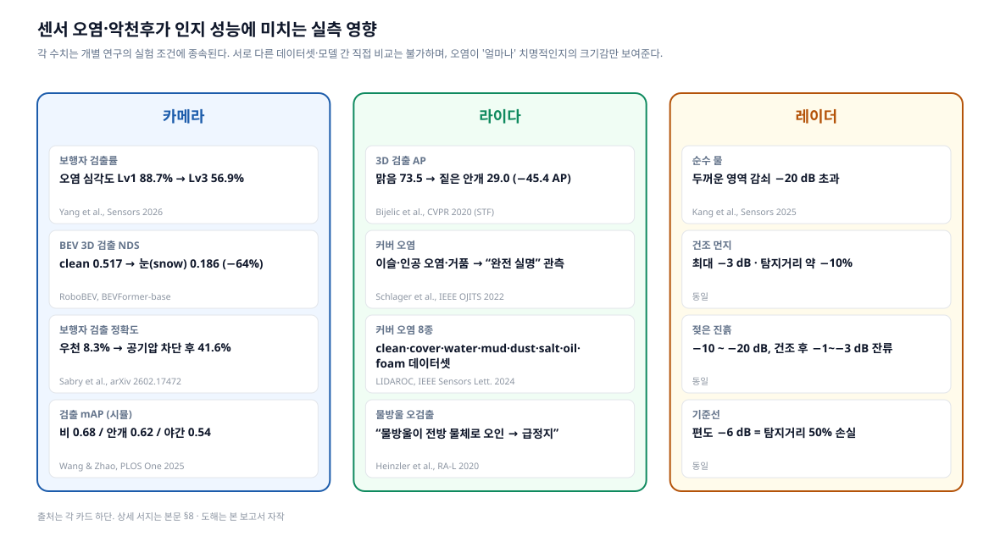
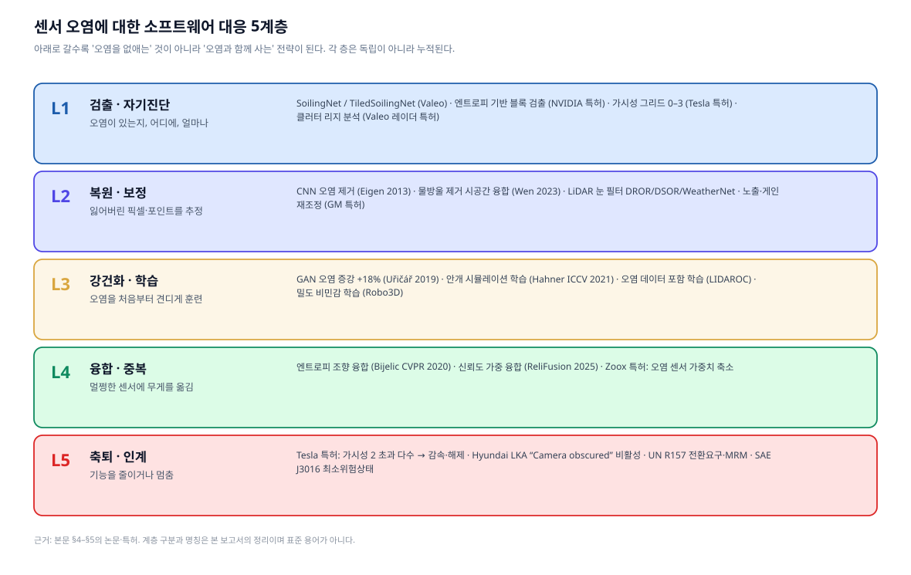
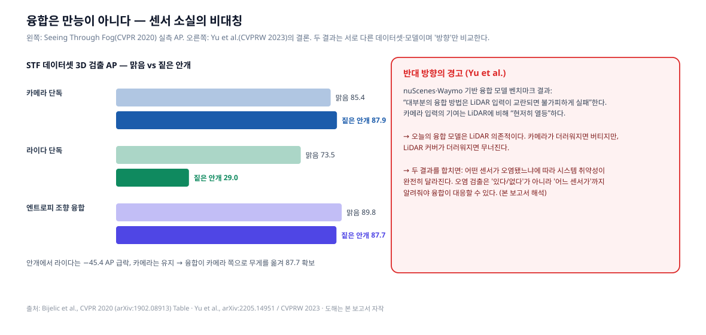
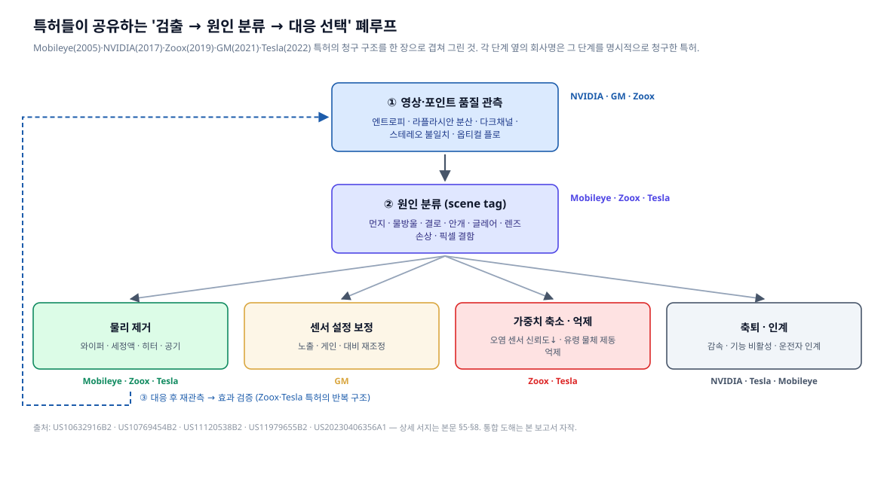
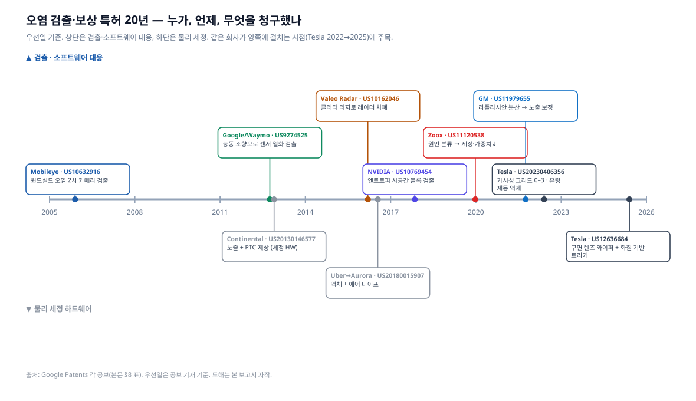
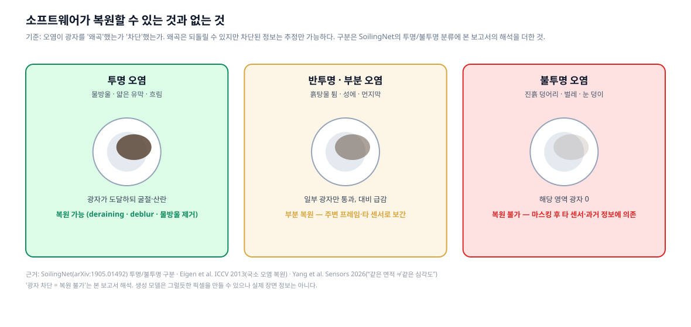

Research · Sensor Soiling × Perception Software · Part 2
센서 오염은 인지를 어떻게 무너뜨리고, 소프트웨어는 어디까지 막아내는가
오염의 실측 영향 · 검출–복원–강건화–융합–축퇴 5계층 · 20년 특허 폐루프 · 복원 불가능의 경계
00
세 줄 요약
- 오염의 영향은 '조금 나빠지는' 수준이 아니다. 카메라 오염 심각도가 1→3단계로 오르면 보행자 검출률이 88.7%→56.9%로 떨어지고(Yang et al., Sensors 2026), 라이다는 짙은 안개에서 3D 검출 AP가 73.5→29.0으로 무너지며(Bijelic et al., CVPR 2020), 라이다 커버의 이슬만으로도 "완전 실명"이 관측됐다(Schlager et al., IEEE OJITS 2022). 레이더는 젖은 진흙에서 −10~−20 dB 감쇠를 겪고, 편도 −6 dB면 탐지거리가 절반이 된다(Kang et al., Sensors 2025).
- 소프트웨어 대응은 5계층으로 정리된다 — ① 검출·자기진단, ② 복원·보정, ③ 강건화 학습, ④ 융합·중복, ⑤ 축퇴·인계. 특허는 이 다섯을 "품질 관측 → 원인 분류 → 대응 선택 → 재검증" 폐루프로 묶는다. Mobileye(2005)·Waymo(2012)·NVIDIA(2017)·Zoox(2019)·GM(2021)·Tesla(2022)의 청구항이 모두 같은 골격을 공유한다.
- 소프트웨어의 한계는 물리적이다. 투명 오염(물방울·유막)은 광자를 왜곡하므로 복원이 통하지만, 불투명 오염(진흙·벌레)은 광자를 차단하므로 추정만 가능하다. 그래서 가장 앞선 카메라 전용 진영조차 결국 물리 세정으로 돌아왔다 — Tesla는 2022년 "가시성 그리드" 특허에 이어 2025년 렌즈 와이퍼 특허를 출원했다. 1편의 AUMOVIO 세정 하드웨어와 이 편의 소프트웨어는 대체재가 아니라 한 폐루프의 두 절반이다.
01
왜 이 보고서인가
1편은 AUMOVIO가 "공기·액체·가열·검출" 네 수단으로 센서를 닦는 방법을 다뤘다. 그 보고서를 쓰면서 답하지 못한 질문이 남았다.
- 오염이 인지 결과를 "치명적으로" 망친다는데, 얼마나 망치는가? 검출률 몇 %가 몇 %로 떨어지는가?
- 닦지 않고 소프트웨어로 버틸 수는 없는가? 오염을 검출하고, 지워진 픽셀을 복원하고, 다른 센서로 메우는 연구는 어디까지 왔는가?
- 그런 방법을 누가 특허로 잡고 있는가? 규제는 무엇을 요구하는가?
이 세 질문을 원문 근거로 답하는 것이 이 보고서의 목표다. 결론부터 말하면, 소프트웨어는 놀랄 만큼 많은 일을 하지만 "광자가 도달하지 않은 영역"은 어떤 알고리즘도 복구하지 못한다는 경계가 분명히 존재하고, 산업계의 특허 지형이 그 경계를 그대로 반영하고 있다.
02
오염이 인지·판단에 미치는 실제 영향
2.1 실측 수치

카메라
| 조건 | 결과 | 출처 (학술) |
|---|---|---|
| 렌즈 오염 심각도 Lv1 → Lv3 (5단계 척도) | 보행자 검출률 88.7% → 56.9%. 통제 실험에서 심각도 증가에 따라 인지 IoU 84.85% 감소 | Yang, Duan, Li, Zhang, "A Static-to-Temporal Framework for Interpretable Camera Lens Soiling Severity Estimation in Autonomous Driving," Sensors 26(11):3533, 2026. doi:10.3390/s26113533 |
| BEV 3D 검출, nuScenes-C 코럽션 | BEVFormer-base NDS: clean 0.517 → 안개 0.407 → 카메라 크래시 0.315 → 눈 0.186 (−64%) | Xie et al., "RoboBEV: Towards Robust Bird's Eye View Perception under Corruptions," arXiv:2304.06719 (TPAMI 2025 확장판 있음) |
| 우천 시 카메라 렌즈 물방울 | 보행자 검출 정확도 8.3% → 공기압 차단 장치 적용 후 41.6% | Sabry, Gorospe, Olaverri-Monreal, arXiv:2602.17472 (2026) |
| CARLA 시뮬레이션 악천후 | YOLOv5 mAP: 비 0.68, 안개 0.62, 야간 0.54 (맑음 대비) | Wang & Zhao, PLOS One 2025, doi:10.1371/journal.pone.0333928 |
카메라 계열 결과에서 가장 중요한 발견은 Yang et al.의 "같은 면적 ≠ 같은 심각도"다. 동일한 픽셀 면적을 덮어도 투명 얼룩과 불투명 진흙은 인지 열화가 다르고, 면적 기반 점수는 외부 데이터에서 상관계수 ρ=0.32에 그친 반면 구조화 점수는 ρ=0.79였다. 즉 "얼마나 더러운가"는 면적이 아니라 광학적 성질로 재야 한다. 이 통찰은 1편의 AUMOVIO 설계 원칙("먼지는 공기만으로, 진흙은 액체로")과 정확히 맞물린다.
라이다
| 조건 | 결과 | 출처 (학술) |
|---|---|---|
| 짙은 안개 (실도로 10,000 km 수집) | 라이다 단독 3D 검출 AP 73.46 → 28.98 (−45.38). 같은 조건에서 카메라 단독은 85.43 → 87.89로 유지 | Bijelic et al., "Seeing Through Fog Without Seeing Fog," CVPR 2020, arXiv:1902.08913 |
| 커버 오염 6종 (이슬·먼지·인공 오염·거품·물·기름) | RIEGL LD05-A20·Ouster OS1-64 실험. 이슬·인공 오염·거품 → "완전 센서 실명(complete sensor blindness)" | Schlager, Gölles, Muckenhuber, Watzenig, IEEE Open J. ITS, 2022, doi:10.1109/OJITS.2022.3214094 · 데이터 Zenodo 6780361 |
| 커버 오염 8종 (clean·cover·water·mud·dust·salt·oil·foam), RS-Ruby 128ch | "깨끗한 데이터로만 학습한 모델은 오염 조건에서 흔들린다" — 오염 데이터를 학습에 포함해야 함 | Jati et al., "LIDAROC," IEEE Sensors Letters 8(9), 2024 · 데이터 Zenodo 12800039 |
| 비·눈 노이즈 포인트 | "물방울이 전방 물체로 오인되어 로봇을 완전 정지시킬 수 있다" | Heinzler, Piewak, Schindler, Stork, "CNN-based Lidar Point Cloud De-Noising in Adverse Weather," IEEE RA-L 2020, arXiv:1912.03874 |
라이다에서 주목할 점은 두 가지다. 첫째, 오염이 아니라 이슬처럼 사소해 보이는 것이 실명을 일으킨다 — 커버 표면의 미세 수막이 레이저를 되반사시켜 근거리 허위 반사를 만들기 때문이다(Schlager et al.). 둘째, 오염은 정보 손실(포인트 결손)뿐 아니라 허위 정보(물방울 = 유령 장애물)도 만든다. 후자가 "유령 제동(phantom braking)"의 라이다판 원인이다.
레이더
| 조건 | 결과 (76–81 GHz) | 출처 (학술) |
|---|---|---|
| 순수 물 (두꺼운 영역) | 감쇠 −20 dB 초과 | Kang, Hamidi, Vanäs, Eidevåg, Nilsson, Friel, "Effects of Dust and Moisture Surface Contaminants on Automotive Radar Sensor Frequencies," Sensors 2025, PMC11991060 |
| 건조 먼지 | 최대 −3 dB, 탐지거리 약 10% 감소 | 동일 |
| 젖은 진흙 → 건조 후 | −10 ~ −20 dB → 잔류 −1 ~ −3 dB | 동일 |
| 기준 | 편도 −6 dB = 탐지거리 50% 손실 (왕복 −12 dB) | 동일 |
레이더는 흔히 "악천후에 강하다"고 알려져 있고 건조 먼지에는 실제로 강하다. 그러나 수분이 개입하는 순간 라이다·카메라 못지않게 취약해진다. 즉 "레이더가 있으니 오염은 괜찮다"는 가정은 물이 없는 조건에서만 성립한다. (수치는 논문, 해석은 본 보고서)
2.2 인지 열화가 판단·제어로 번지는 방식
수치는 "검출률"에서 멈추지만, 실제 사고 경로는 그 뒤에서 만들어진다. 공개 자료에서 확인되는 세 가지 전파 경로:
- 유령 물체 → 불필요한 제동. Tesla 특허 US20230406356A1은 "가시성이 낮은 상황에서 유령 물체(phantom object)가 검출될 수 있고, 가시성 정보를 이용해 그 원인이 시야 저하임을 식별하여 제동 같은 특정 자율 동작을 억제"한다고 명시한다. (Google Patents) 즉 Tesla 스스로가 오염·안개 → 유령 검출 → 급제동 경로를 문제로 인식하고 청구항에 적었다.
- 검출 실패 → 기능 침묵. Hyundai 차주 매뉴얼은 "전면 윈드실드나 센서가 눈·비 등 이물질로 덮이면 검출 성능이 저하되어 차로 유지 보조가 일시 제한·해제될 수 있다"며 "Lane Safety system disabled. Camera obscured." 경고를 띄운다고 적는다. (Hyundai 매뉴얼) 이것은 오염이 양산차 ADAS를 실제로 꺼버린다는 1차 증거다.
- 시스템 수준 반응의 편차. NHTSA·VTTI의 2025년 12월 보고서는 카메라·레이더·라이다에 가림·도로 오물·부적절 수리·긁힘을 각 3단계 심각도로 가하고, 시스템 수준 반응이 "기능 완전 정지부터 성능 저하, 측정 가능한 영향 없음까지" 갈렸다고 밝혔다 — 차이는 차량 아키텍처가 오염 데이터를 어떻게 처리하고 센서 융합 같은 중복을 쓰는가에서 나왔다. (Virginia Tech Transportation Institute / NHTSA, "Safety Implications of Potential ADAS Sensor Degradation," 2025-12, ROSA P dot:88134)
세 번째가 핵심이다. 같은 오염이라도 소프트웨어 아키텍처에 따라 결과가 "정지"와 "무영향" 사이에서 갈린다. 이것이 이 보고서의 나머지 절이 다룰 내용이다.
03
규제·표준은 무엇을 요구하나
| 문서 | 요구 내용 | 확인 상태 |
|---|---|---|
| ISO 21448:2022 (SOTIF) | 고장이 아닌 기능적 불충분(functional insufficiency)과 그것을 촉발하는 트리거링 컨디션을 식별·평가. "카메라의 센서 손상 같은 E/E 오작동이 직접 일으키는 위험은 다루지 않는다" — 즉 오염은 손상이 아니라 성능 한계로 취급 | 해설 자료 확인 (ASAM); 표준 원문은 유료 — 원문 조항 미확인 |
| UN Regulation No. 157 (ALKS) | 인지 서브시스템의 최소 시야(FOV)와 "FOV 범위를 저해하는 조건을 검출할 능력" 요구. 감지 성능 저하 시 전환 요구(transition demand) 및 최소 위험 조작(MRM) | 2차 자료 확인 (oToBrite 해설, regulations.ai); UNECE 원문 PDF는 접근 차단(HTTP 403) — 조항 번호·정확한 문구 미확인 |
| SAE J3016 (2021) | 최소 위험 상태(minimal risk condition): "주행을 계속할 수 없거나 계속해서는 안 될 때 사용자 또는 ADS가 DDT fallback 수행 후 차량을 가져가는 안정된 정지 상태." L4/L5 ADS는 ODD 이탈이나 성능 관련 고장 시 자동으로 달성해야 함 | 원문 PDF 확인 (SAE J3016_202104) |
| Euro NCAP 2026 | 강건성(robustness) 시험 도입 — 기본 시나리오에 속도·오프셋 변형을 주어 실제 조건 재현. "센서 차폐" 전용 프로토콜은 확인되지 않음 | 2차 자료 확인 (AB Dynamics); 공식 프로토콜 내 오염 시험 조항 미확인 |
정리하면 규제는 "오염을 없애라"가 아니라 "오염을 알아차리고(검출), 못 보게 됐음을 인정하고(전환 요구), 안전하게 멈춰라(MRM)"를 요구한다. 이것이 5계층 중 L1과 L5가 법적 의무에 가장 가까운 이유다. (정리는 본 보고서 해석)
04
소프트웨어 대응의 지형 — 5계층

먼저 답부터 — "소프트웨어로 복구·보상하는 알고리즘이 실제로 있는가?"
있다. 다만 오염이 광자를 왜곡했는가, 차단했는가에 따라 되는 것과 안 되는 것이 갈린다. 아래는 이 보고서가 원문으로 확인한 사례를 "복구 / 보상 / 강건화 / 양산 적용" 네 묶음으로 압축한 것이다. 상세 근거는 이어지는 5계층 절(§4.1~§4.5)과 특허 절(§5)에 있다.
| 묶음 | 무엇을 하는가 | 확인된 알고리즘 · 사례 | 효과 (원문 수치) |
|---|---|---|---|
| 복구 (잃은 픽셀·포인트를 되살림) | 국소 비·먼지 아티팩트 제거 | Eigen, Krishnan, Fergus — ICCV 2013 CNN | 분야의 출발점, 국소 아티팩트 한정 |
| 주행 영상 물방울 제거 | Wen, Wu, Chen — 다중 프레임 시공간 융합 (arXiv:2302.05916) | 실주행 물방울 복원 | |
| 악천후 → 맑음 변환 후 검출 | Wang & Zhao — LP-GAN + YOLOv5 (PLOS One 2025) | mAP 비 0.68→0.81, 안개 0.62→0.78 — CARLA 시뮬 | |
| 라이다 비·눈 노이즈 포인트 제거 | DROR/DSOR 통계 필터 (Kurup & Bos 2021), WeatherNet CNN (Heinzler, RA-L 2020), 4DenoiseNet | DSOR: 재현율 +4%, 시간 −28% vs DROR. "물방울 = 유령 장애물 → 급정지" 방지 | |
| 흐림 판정 후 카메라 설정 보정 | GM 특허 US11979655 — 라플라시안 분산 → 노출·게인 피드백 | 임계 이상까지 반복 조정 | |
| 보상 (못 보는 센서를 다른 센서·정보로 메움) | 센서별 신뢰도로 융합 가중치 이동 | Bijelic et al., CVPR 2020 — 엔트로피 조향 융합 | 짙은 안개서 라이다 AP 29.0으로 붕괴 → 융합은 87.7 유지 |
| 신뢰도 가중 교차 어텐션 | ReliFusion (2025), SB-BEVFusion (2026) | LiDAR 결손·오작동에서 BEVFusion 능가 | |
| 오염 원인별 가중치 축소·재보정 | Zoox 특허 US11120538 | 물리 오염 → 세정, 광학 현상 → 가중치↓ | |
| 가려진 영역의 검출 결과 억제 | Tesla 특허 US20230406356 — 가시성 그리드 0–3 | 유령 물체 제동 억제, 임계 초과 시 감속·해제 | |
| 강건화 (오염을 견디게 학습) | 오염 패턴 합성 증강 | Uřičář et al. 2019 — GAN | 오염 검출 정확도 +18% |
| 물리 기반 안개 합성 학습 | Hahner et al., ICCV 2021 | 실안개 3D 검출 "유의미하게 향상" | |
| 실오염 데이터 학습 | LIDAROC (2024), Robo3D 밀도 비민감 학습 (2023) | "clean만 학습한 모델은 오염에서 흔들림" | |
| 양산 적용 | 오염 시 기능 축퇴 | Hyundai LKA — "Camera obscured" 비활성 | 매뉴얼 명시 |
| 센서 중복 + 자동 세정 병용 | Waymo 6세대 Driver | "카메라 제한 시 라이다·레이더가 중복 제공", 세정·가열 병용 |
그리고 한계. 복구 성공 사례는 전부 국소·투명 오염 아니면 시뮬레이션이다. 렌즈 대부분이 불투명 오염된 경우의 복원 사례는 본 조사에서 찾지 못했다. 융합도 만능이 아니다 — Yu et al.(CVPRW 2023)은 "대부분의 융합 방법은 LiDAR 입력이 교란되면 불가피하게 실패"한다고 보고했고, 라이다 커버 이슬은 "완전 실명"을 만든다(Schlager 2022) — 포인트가 0이면 필터할 것이 없다. 카메라 전용 노선의 Tesla가 2025년 렌즈 와이퍼 특허를 낸 것이 이 한계의 산업적 증거다. 즉 소프트웨어의 역할은 "닦는 동안 버티기"와 "못 닦으면 안전하게 멈추기"이고, 오염 자체의 제거는 하드웨어 몫이다. (정리는 본 보고서 해석, 각 수치는 표 안 출처)
아래로 갈수록 "오염을 없애는" 전략에서 "오염과 함께 사는" 전략으로 바뀐다. 다섯 층은 대안이 아니라 누적이다 — L2 복원을 하려면 L1 검출이 먼저 있어야 하고, L4 융합이 가중치를 옮기려면 L1이 "어느 센서가" 오염됐는지 알려줘야 한다.
4.1 L1 — 검출·자기진단
핵심 문제: 오염이 있는가, 어디에, 얼마나, 무엇 때문에.
| 연구 | 내용 | 출처 |
|---|---|---|
| SoilingNet (Valeo) | 서라운드뷰 카메라 오염을 불투명/투명으로 분류하는 CNN. 물체 검출과 멀티태스크 학습, GAN 증강. "카메라는 다른 센서보다 오염에 의한 성능 저하가 훨씬 크다" | Uřičář, Křížek, Sistu, Yogamani, arXiv:1905.01492, 2019 |
| WoodScape (Valeo) | 4개 어안 카메라, 1만+ 인스턴스 분할 이미지, 9개 태스크 중 하나가 오염 검출. 오염 서브셋은 clean·transparent·semi-transparent·opaque 4클래스 5,000장 | Yogamani et al., ICCV 2019, arXiv:1905.01489 · woodscape.valeo.com |
| SoildNet (Valeo) | 1280×768 입력을 64×64 타일로 나눠 검출. 압축 모델이 기본 네트워크 대비 9.72% 파라미터로 동일 정확도, 약 1 TOPS 임베디드 대상 | Das, NeurIPS 2019 ML4AD 워크숍, arXiv:1911.01054 |
| Let's Get Dirty | GAN으로 미관측 오염 패턴 합성 + 마스크 자동 생성 → 검출 정확도 18% 향상 | Uřičář et al., arXiv:1912.02249, 2019 |
| WoodScape 재검토 | 원본 오염 데이터셋에 데이터 누수와 부정확한 주석이 있어 새 서브셋 구성. 타일 분류 대신 의미 분할로 재정식화 | Beránek, Diviš, Gruber, arXiv:2511.09740, 2025 |
| Static-to-Temporal 심각도 추정 | 5단계 심각도, 50,458장 외부 테스트. 시간적 안정화로 지터 51.5% 감소. 면적 기반 점수 ρ=0.32 vs 구조화 점수 ρ=0.79 | Yang et al., Sensors 2026, doi:10.3390/s26113533 |
| GSHI (Global Sensor Health Index) | 단일 RGB에서 열화 유형·심각도·불확실성 맵을 동시 추정. YOLOv8 검출 실패보다 평균 0.47±0.25 심각도 단위 앞서 조기 경보 | Aher, arXiv:2605.05439, 2026 |
| 특징 기반 열화 인식 | 소수의 유의 특징 선택으로 소규모 데이터에서도 렌즈 오염·열화 유형 분류 | Bauer, arXiv:2303.07100, 2023 |
| 레이더 차폐 검출 | 정지 구조물 반사의 클러터 리지(clutter ridge) 형태로 차폐 판정 — 시동 후 수 초 내 판정 | Valeo Radar Systems, US10162046B2 (우선일 2016-03-17) |
| 라이다 오염 고장 진단 | "오염 유형마다 증상 조합이 달라 고장 검출·격리(FDI)에 활용 가능" | Schlager et al., IEEE OJITS 2022 (위 인용) |
L1의 연구 흐름은 명확하다. (a) "있다/없다" → "어디에" (타일) → "얼마나" (심각도) → "왜" (원인)로 정보량이 늘고, (b) 단일 프레임 → 시간 축으로 안정화되며, (c) 사후 검출 → 조기 경보로 이동한다. 실무적으로 중요한 것은 Beránek et al.(2025)의 지적이다 — 이 분야의 기준 데이터셋 자체에 누수가 있었다. 즉 지금까지 보고된 오염 검출 정확도 일부는 과대평가됐을 가능성이 있다. (마지막 문장은 본 보고서 해석)
4.2 L2 — 복원·보정
핵심 문제: 잃어버린 픽셀·포인트를 어디까지 되돌릴 수 있는가.
| 연구 | 내용 | 출처 |
|---|---|---|
| Eigen, Krishnan, Fergus (ICCV 2013) | "창문 너머로 찍은 사진에서 국소적 비·먼지 아티팩트 제거." 깨끗/오염 쌍으로 특수 CNN 학습 — 이 분야의 출발점 | ICCV 2013 Open Access, doi:10.1109/ICCV.2013.84 |
| 비디오 물방울 제거 (주행 장면) | 다중 프레임의 시공간 표현을 어텐션으로 융합. 합성 데이터 + 실이미지 교차 학습 | Wen, Wu, Chen, arXiv:2302.05916, 2023 |
| 악천후 → 맑음 변환 후 검출 | LP-GAN(Pix2Pix 경량화) → YOLOv5. mAP 비 0.68→0.81, 안개 0.62→0.78, 야간 0.54→0.76. CARLA 시뮬 4만 장, 실도로 아님 | Wang & Zhao, PLOS One 2025 (위 인용) |
| LiDAR 눈 제거 — DROR/DSOR | 포인트 밀도 변화를 고려한 통계 필터. DSOR이 DROR 대비 재현율 4%↑, 실행 시간 28%↓. WADS 데이터셋(미시간 어퍼 페닌슐라 겨울) | Kurup & Bos, arXiv:2109.07078, 2021 |
| WeatherNet | 최초 CNN 기반 라이다 악천후 노이즈 제거. 기하 필터 대비 "유의미한 성능 향상" | Heinzler et al., RA-L 2020 (위 인용) |
| 4DenoiseNet | 인접 프레임 시공간 문맥으로 실시간 노이즈 제거 | arXiv:2209.07121 |
| 노출·게인 재조정 (GM 특허) | 와이퍼·제상·강수 센서 작동을 트리거로 ROI의 라플라시안 분산을 계산해 흐림 판정 → 카메라 캡처 설정(노출·대비·게인)을 임계 이상까지 피드백 조정 | GM Global Technology Operations, US11979655B2 (우선일 2021-09-30) |
L2에서 반드시 짚어야 할 경계가 있다. 복원이 "검출을 돕는가"와 "정보를 되살리는가"는 다른 질문이다. PLOS One 결과(0.68→0.81)는 전자를 시뮬레이션에서 보였을 뿐이고, Eigen et al.이 다룬 것은 국소적 아티팩트다. 진흙이 렌즈 절반을 덮은 경우 GAN은 "그럴듯한 픽셀"을 생성할 수는 있어도 실제 장면을 만들 수는 없다. 이 문제는 §8에서 다시 다룬다.
4.3 L3 — 강건화 학습
핵심 문제: 오염을 처음부터 견디도록 훈련할 수 있는가.
| 연구 | 내용 | 출처 |
|---|---|---|
| 안개 시뮬레이션 학습 | 맑은 날 실측 포인트클라우드에 물리 기반 안개를 합성해 학습 → STF 실안개에서 3D 검출 "유의미하게 향상" | Hahner, Sakaridis, Dai, Van Gool, ICCV 2021, arXiv:2108.05249 |
| Robo3D | 라이다 코럽션 8종(안개·눈·젖은 노면·모션블러·빔 결손·크로스토크·불완전 에코·센서 교차). "SOTA 3D 모델은 코럽션에 취약" → 밀도 비민감 학습 + 유연 복셀화 제안 | Kong et al., ICCV 2023, arXiv:2303.17597 |
| RoboBEV | 카메라 BEV 모델 30종을 nuScenes-C로 벤치마크. 사전학습·깊이 무관(depth-free) BEV 변환·장기 시간 융합이 강건성에 기여 | Xie et al. (위 인용) |
| LIDAROC | "오염 데이터를 학습 단계에 포함하는 것이 필수" | Jati et al., 2024 (위 인용) |
| GAN 오염 증강 | +18% (L1 항목과 동일 연구) | Uřičář et al., 2019 |
L3의 공통 결론은 단순하다 — 오염을 본 적 없는 모델은 오염 앞에서 무너진다. 그리고 실제 오염 데이터는 모으기 어렵고(눈 오는 날을 기다려야 한다) 주석은 더 어렵기 때문에, 물리 기반 시뮬레이션과 GAN 합성이 사실상 표준이 됐다. 다만 RoboBEV가 지적하듯 "clean 성능이 좋은 모델이 corrupted 성능도 좋다"는 보장은 없고, 순위가 뒤바뀐다.
4.4 L4 — 융합·중복
핵심 문제: 한 센서가 더러워졌을 때 다른 센서가 메울 수 있는가.

| 연구 | 내용 | 출처 |
|---|---|---|
| 엔트로피 조향 융합 | 센서별 측정 엔트로피로 융합 가중치를 적응 조정. 짙은 안개에서 라이다 29.0, 카메라 87.9일 때 융합 87.7 달성 — 무너진 센서에 끌려가지 않음 | Bijelic et al., CVPR 2020 (위 인용) |
| LiDAR-카메라 융합 강건성 벤치마크 | nuScenes·Waymo 기반. "대부분의 융합 방법은 LiDAR 입력이 교란되면 불가피하게 실패", 카메라 입력의 기여는 LiDAR에 비해 "현저히 열등" | Yu et al., arXiv:2205.14951 / CVPRW 2023 |
| MultiCorrupt | 10종 다중 모달 코럽션(눈·안개·공간/시간 오정렬 등). "융합 전략에 따라 강건성이 갈린다" | Beemelmanns, Zhang, Geller, Eckstein, arXiv:2402.11677 |
| ReliFusion | 신뢰도 모듈이 모달별 신뢰 점수를 부여하고 신뢰도 가중 상호 교차 어텐션으로 균형. LiDAR 제한 FOV·심각한 오작동에서 BEVFusion 능가 | Sadeghian et al., arXiv:2502.01856, 2025 |
| SB-BEVFusion | 결손·오염 모달리티 시나리오에서 BEVFusion 개선 | arXiv:2605.11799, 2026 |
두 결과를 겹쳐 보면 융합에 대한 단순한 낙관이 깨진다. STF는 "안개에서 카메라가 라이다를 구한다"를 보여주고, Yu et al.은 "오늘의 융합 모델은 LiDAR가 흔들리면 함께 무너진다"를 보여준다. 모순이 아니다 — 어느 센서가 오염됐느냐에 따라 취약성이 완전히 달라진다는 뜻이다. 따라서 L1 검출은 "오염이 있다"가 아니라 "어느 센서의 어느 영역이 얼마나"까지 알려줘야 L4가 가중치를 옮길 수 있다. (본 보고서 해석)
Waymo의 공식 서술도 같은 구조다. "카메라 시야가 제한되는 조건에서 라이다와 레이더가 필요한 중복을 제공한다"(6세대 Driver 소개, Waymo 블로그 2024-08). 그리고 그 Waymo도 자동 세정 시스템과 가열 요소를 함께 쓴다(Waymo 블로그 2025-10) — 융합만으로 충분했다면 세정이 필요 없었을 것이다.
4.5 L5 — 축퇴·인계
핵심 문제: 더 이상 못 보겠다고 언제, 어떻게 인정할 것인가.
| 사례 | 내용 | 출처 |
|---|---|---|
| Tesla 특허 | 전방 영상에서 가시성 값 2(부분 가림)가 임계 개수 초과면 감속; 높은 가시성 손실은 자율 모드 해제 → 운전자 제어 | US20230406356A1 |
| NVIDIA 특허 | 블록 점수가 임계 초과 시 경보 신호 → "차량 제어를 조정하거나 인간 제어자에게 경고" | US10769454B2 / US20190138821A1 (우선일 2017-11-07) |
| Hyundai 양산차 | "Camera obscured" → 차로 유지 보조 비활성, 장애물 제거 시 복귀 | Hyundai 매뉴얼 (위 인용) |
| UN R157 | 감지 성능 저하 → 전환 요구 → MRM (감속 5 m/s² 초과 조건 등) | 2차 자료 (위 표) |
| SAE J3016 | 최소 위험 상태 = "안정된 정지 상태"; 단 "계속 주행·갓길 정차·제자리 정지의 상대 위험을 고려한 축퇴 모드 전략을 따를 수 있음" | J3016_202104 (위 인용) |
| Waymo 능동 진단 특허 | 차량이 의도적으로 조향·속도 변화를 주고 센서 응답이 예측과 맞는지 비교. 편차 초과 시 경고·수동 전환 요청·시각·위치 기록 | Google/Waymo, US9274525B1 (우선일 2012-09-28) |
L5는 기술적으로 가장 단순하지만 사업적으로 가장 비싸다. 로보택시가 "못 보겠다"고 멈추는 것은 곧 운행 중단이고, 1편에서 본 세정액 예산 문제와 직결된다. Tesla 특허가 "감속"과 "해제"를 가시성 값의 개수 임계로 단계화한 것은, 축퇴를 이진 스위치가 아니라 연속 다이얼로 만들려는 시도로 읽힌다. (본 보고서 해석)
05
특허가 그리는 폐루프

여섯 회사의 특허를 나란히 읽으면 놀랄 만큼 같은 골격이 나온다.
| 단계 | Mobileye 2005 | NVIDIA 2017 | Zoox 2019 | GM 2021 | Tesla 2022 |
|---|---|---|---|---|---|
| ① 품질 관측 | 윈드실드 표면에 초점 맞춘 2차 카메라로 고주파 에지 검출 | 처리 단위(PU)별 엔트로피, 히스토그램 동적 임계, 프레임 간 지속성 추적 | 스테레오 불일치 · 다크채널 · 옵티컬 플로 · ML 병용 | 와이퍼·제상 작동을 트리거로 ROI 라플라시안 분산 | 그리드별 가시성 값 0–3 |
| ② 원인 분류 | 비·눈 / 먼지·진흙 / 김서림·결로 / 균열 | (블록 점수만) | 먼지·진흙·플레어·초점 오류 + 태양각·날씨·차량 자세 결합 | (흐림 판정만) | 안개·결로·얼음·물·비·글레어·연기·타이어 스프레이·더러운 윈드실드·데드 픽셀 |
| ③ 대응 선택 | 와이퍼 · 세정액 · 제상 · 안개등 · 운전자 통지 · 영향 받는 비전 기능 비활성 | 경보 → 제어 조정 또는 경고 | 물리 오염 → 세정 / 광학 현상 → 가중치 축소·차량 방향 변경 / 오작동 → 재보정·속도·경로 조정 · 심하면 자율 중단 | 카메라 설정 피드백 조정 | 와이퍼·히터·제상 / 감속 / 유령 물체 제동 억제 / 자율 해제 |
| 출처 | US10632916B2 (우선일 2005-11-23) | US10769454B2 (2017-11-07) | US11120538B2 (2019-12-27) | US11979655B2 (2021-09-30) | US20230406356A1 (2022-05-20) |
여기서 읽히는 것 세 가지. (본 보고서 해석)
- 원인 분류가 특허의 핵심 차별점이다. 검출 자체(①)는 20년 전 Mobileye가 이미 청구했다. 2019년 이후 Zoox·Tesla의 청구항은 "무엇 때문에 안 보이는가"를 세분화하는 데 집중한다 — 대응(③)이 원인에 따라 갈리기 때문이다. 이것은 1편의 AUMOVIO 4대 수단(공기/액체/가열)이 오염 유형별로 나뉘는 것과 같은 논리다.
- 소프트웨어 특허가 물리 세정을 청구항 안에 품는다. Mobileye·Zoox·Tesla 모두 "세정액 분사"를 대응 중 하나로 넣었다. 즉 검출 SW와 세정 HW는 하나의 특허 안에서 폐루프를 이룬다. 1편 7장에서 지적한 "AUMOVIO 세정 매각 후 검출 SW(AUMOVIO)와 액추에이터(CERTINA)가 회사 간 인터페이스로 갈린다"는 우려가 특허 지형에서도 확인된다.
- Tesla는 결국 하드웨어로 돌아왔다. 2022년 가시성 그리드 특허에서 대응은 와이퍼·히터·감속·억제·해제까지였다. 2025년 5월 21일 출원, 2026년 5월 26일 등록된 US 12,636,684 B1 "Lens Cleaning System"은 구면 렌즈 곡률을 따르는 소형 와이퍼와 세정액 분사를 청구하며, "카메라 피드 자체의 화질을 계속 감시해 오염 검출 시 자동으로 세정 시퀀스를 활성화"한다고 보도됐다. (Electrek 2026-06-02, Not a Tesla App — 서드파티 보도, Google Patents 원문은 조회 시점에 미색인(404)이라 청구항 직접 확인 실패)

이 밖에 방향이 다른 특허 두 건도 기록해 둔다.
- State Farm, US11189112B1 (우선일 2016-01-22): 보험사가 출원. 센서 신호를 과거 세션 기준선 및 타 센서와 비교해 오작동 판정 → 자율 기능 제한·비활성·보험 조건 조정. 오염 검출이 보험 리스크 산정으로 이어지는 경로. (Google Patents)
- Rockwell Collins, US12067813B2 (우선일 2021-02-01): 항공 분야. 차량 상태·환경(안개·태양각)에서 기대 센서 출력을 계산해 실제와 비교, 0–100 열화 점수 → "환경 탓인가 고장인가" 구분. 임무 건전성 임계 미달 시 다른 차량에 임무 이관. (Google Patents) 로보택시 플릿의 "오염 차량 교체 배차"와 같은 구조다.
06
소프트웨어의 한계 — 무엇을 복원할 수 없는가

여기까지의 근거를 한 문장으로 압축하면 이렇다. (본 보고서 해석)
소프트웨어는 왜곡을 되돌리고, 결손을 추정하고, 신뢰를 재배분하고, 멈출 때를 안다. 그러나 렌즈에 도달하지 않은 광자를 만들어내지는 못한다.
근거를 다시 모으면:
- SoilingNet의 투명/불투명 구분과 Yang et al.의 "같은 면적 ≠ 같은 심각도"는 오염의 광학적 성질이 결정적임을 보여준다.
- Eigen et al.(2013)이 다룬 것은 국소(localized) 아티팩트였고, PLOS One의 0.68→0.81은 시뮬레이션이었다. 렌즈 대부분이 불투명하게 덮인 경우의 복원 성공 사례는 본 조사에서 확인되지 않았다.
- Schlager et al.의 라이다 "완전 실명"은 어떤 필터로도 되돌릴 수 없는 상태다 — 포인트가 없다.
- Yu et al.은 융합조차 LiDAR 결손에는 무력함을 보였다.
- 그리고 카메라 전용 노선의 대표 주자 Tesla가 렌즈 와이퍼 특허를 냈다.
1편과 이 편을 잇는 결론은 단순하다. 오염 대응은 "닦을 것인가, 버틸 것인가"의 선택이 아니라, "얼마나 빨리 알아채고(L1), 닦는 동안 얼마나 버티며(L2–L4), 못 닦으면 얼마나 안전하게 멈추는가(L5)"의 설계 문제다. AUMOVIO의 세정 하드웨어는 이 루프에서 "닦는" 액추에이터이고, 이 편의 소프트웨어는 그 앞뒤를 채운다.
07
시사점 — 인지 아키텍처 설계자 체크리스트
(본 보고서 해석. 특정 기업의 권고가 아니다.)
- 오염 검출 출력을 "센서·영역·심각도·원인"의 4-튜플로 정의하라. 이진 플래그로는 L4 융합도 L5 축퇴도 제대로 동작하지 않는다. Tesla의 그리드 가시성, Zoox의 원인 분류, Yang et al.의 구조화 심각도가 모두 이 방향이다.
- 면적 기반 오염 점수를 쓰지 마라. 외부 데이터 상관 ρ=0.32(면적) vs 0.79(구조화). 투명 얼룩과 불투명 진흙을 같은 점수로 취급하면 세정액도 낭비하고 축퇴 판단도 틀린다.
- "오염을 본 적 있는" 모델만 배포하라. 시뮬레이션 안개(Hahner), GAN 오염(Uřičář), 실오염 데이터셋(LIDAROC·WADS)을 학습 파이프라인에 넣어라. clean 벤치마크 순위는 corrupted 순위를 보장하지 않는다(RoboBEV).
- 융합 모델의 LiDAR 의존도를 측정하라. LiDAR 커버 오염 시나리오를 검증 세트에 반드시 포함시켜라(Yu et al.). "레이더가 있으니 괜찮다"는 가정은 젖은 오염에서 깨진다(Kang et al.).
- 유령 물체 억제 로직에 가시성 정보를 연결하라. Tesla 특허의 핵심은 "검출됐다"와 "그 영역이 가려져 있다"를 동시에 보는 것이다. 오염 검출이 인지 파이프라인 바깥에 있으면 유령 제동을 막을 수 없다.
- 축퇴를 다이얼로 설계하라. 감속 → 기능 축소 → 인계 요구 → MRM의 연속 단계를, 가시성 임계의 개수로 구동하라(Tesla). SAE J3016은 축퇴 모드 전략을 명시적으로 허용한다.
- 세정 액추에이터와 검출 SW의 인터페이스를 계약 문서로 못 박아라. 특허들은 이 둘을 한 청구항에 넣는다. 1편에서 본 CERTINA 매각처럼 조직 경계가 갈리면, "검출 → 세정 지령 → 재검증" 루프의 지연·책임을 누가 보증하는지 사양서에 있어야 한다.
08
출처
학술 논문
| 자료 | 내용 | URL |
|---|---|---|
| Yang, Duan, Li, Zhang, Sensors 26(11):3533, 2026 | 렌즈 오염 심각도 추정, 보행자 검출 88.7→56.9% | https://doi.org/10.3390/s26113533 |
| Xie et al., RoboBEV, arXiv:2304.06719 | nuScenes-C, BEVFormer 눈 NDS −64% | https://arxiv.org/abs/2304.06719 |
| Sabry, Gorospe, Olaverri-Monreal, arXiv:2602.17472 | 공기압 우천 차단, 보행자 검출 8.3→41.6% | https://arxiv.org/abs/2602.17472 |
| Wang & Zhao, PLOS One 2025 | LP-GAN 변환 후 YOLOv5 mAP (CARLA) | https://journals.plos.org/plosone/article?id=10.1371/journal.pone.0333928 |
| Bijelic et al., CVPR 2020, arXiv:1902.08913 | Seeing Through Fog, 엔트로피 조향 융합, STF 데이터셋 | https://arxiv.org/abs/1902.08913 |
| Schlager et al., IEEE OJITS 2022 | 라이다 커버 오염 6종, 완전 실명 | https://ieeexplore.ieee.org/document/9916511/ · https://zenodo.org/records/6780361 |
| Jati et al., LIDAROC, IEEE Sensors Lett. 2024 | 라이다 커버 오염 8종 데이터셋 | https://zenodo.org/records/12800039 |
| Heinzler et al., IEEE RA-L 2020, arXiv:1912.03874 | WeatherNet, CNN 라이다 노이즈 제거 | https://arxiv.org/abs/1912.03874 |
| Kurup & Bos, arXiv:2109.07078 | DSOR 눈 필터, WADS | https://arxiv.org/abs/2109.07078 |
| 4DenoiseNet, arXiv:2209.07121 | 시공간 라이다 노이즈 제거 | https://arxiv.org/pdf/2209.07121 |
| Kang et al., Sensors 2025 | 레이더 먼지·수분 감쇠 | https://pmc.ncbi.nlm.nih.gov/articles/PMC11991060/ |
| Uřičář et al., SoilingNet, arXiv:1905.01492 | 투명/불투명 오염 검출 | https://arxiv.org/abs/1905.01492 |
| Yogamani et al., WoodScape, ICCV 2019, arXiv:1905.01489 | 어안 데이터셋, 오염 태스크 | https://arxiv.org/abs/1905.01489 |
| Das, SoildNet, arXiv:1911.01054 | 9.72% 파라미터 압축 오염 검출 | https://arxiv.org/abs/1911.01054 |
| Uřičář et al., Let's Get Dirty, arXiv:1912.02249 | GAN 오염 증강 +18% | https://arxiv.org/abs/1912.02249v2 |
| Beránek, Diviš, Gruber, arXiv:2511.09740 | WoodScape 오염 데이터 누수 지적 | https://arxiv.org/abs/2511.09740 |
| Aher, arXiv:2605.05439 | GSHI 카메라 건전성 조기 경보 | https://arxiv.org/abs/2605.05439 |
| Bauer, arXiv:2303.07100 | 특징 기반 열화 인식 | https://arxiv.org/abs/2303.07100 |
| Eigen, Krishnan, Fergus, ICCV 2013 | 창문 너머 비·먼지 제거 CNN | https://openaccess.thecvf.com/content_iccv_2013/papers/Eigen_Restoring_an_Image_2013_ICCV_paper.pdf |
| Wen, Wu, Chen, arXiv:2302.05916 | 비디오 물방울 제거 (주행) | https://arxiv.org/abs/2302.05916 |
| Hahner et al., ICCV 2021, arXiv:2108.05249 | 라이다 안개 시뮬레이션 학습 | https://arxiv.org/abs/2108.05249 |
| Kong et al., Robo3D, ICCV 2023, arXiv:2303.17597 | 라이다 코럽션 8종 벤치마크 | https://arxiv.org/abs/2303.17597 |
| Yu et al., arXiv:2205.14951 / CVPRW 2023 | 융합 강건성, LiDAR 의존 | https://arxiv.org/abs/2205.14951 |
| Beemelmanns et al., MultiCorrupt, arXiv:2402.11677 | 다중 모달 코럽션 벤치마크 | https://arxiv.org/abs/2402.11677 |
| Sadeghian et al., ReliFusion, arXiv:2502.01856 | 신뢰도 가중 융합 | https://arxiv.org/abs/2502.01856 |
| SB-BEVFusion, arXiv:2605.11799 | 결손 모달리티 강건화 | https://arxiv.org/abs/2605.11799 |
| Ferreira et al., arXiv:2412.06869 | ML 인지 안전 모니터 서베이 | https://arxiv.org/abs/2412.06869 |
| Eberhardt et al., IEEE ICVES 2024 | 센서 차폐 열화 분류 서베이 (KIT) | https://ieeexplore.ieee.org/document/10927915/ |
특허 (Google Patents / USPTO)
| 공보 | 출원인 | 우선일 | 요지 |
|---|---|---|---|
| US10632916B2 | Mobileye Vision Technologies | 2005-11-23 | 윈드실드 표면 2차 카메라 오염 검출 → 와이퍼·세정·제상·비전 비활성 |
| US9274525B1 | Google / Waymo | 2012-09-28 | 능동 조향으로 센서 열화 검출 |
| US10162046B2 | Valeo Radar Systems | 2016-03-17 | 클러터 리지 기반 레이더 차폐 검출 |
| US11189112B1 | State Farm | 2016-01-22 | 기준선·교차 비교 오작동 검출 → 기능 제한·보험 조정 |
| US10769454B2 / US20190138821A1 | NVIDIA | 2017-11-07 | 엔트로피 시공간 카메라 블록 검출 |
| US11120538B2 | Zoox | 2019-12-27 | 열화 원인 분류 → 세정·가중치 축소·재보정 |
| US11979655B2 | GM Global Technology Operations | 2021-09-30 | 라플라시안 분산 흐림 판정 → 노출·게인 보정 |
| US12067813B2 | Rockwell Collins | 2021-02-01 | 기대 출력 대비 열화 점수 → 임무 이관 |
| US20230406356A1 (US12623691) | Tesla | 2022-05-20 | 가시성 그리드 0–3, 유령 제동 억제, 감속·해제 |
| US 12,636,684 B1 | Tesla | 2025-05-21 출원, 2026-05-26 등록 | 구면 렌즈 와이퍼 + 화질 기반 세정 트리거 — 원문 미확인(2차 인용) |
| US20130146577A1 | Continental Automotive Systems | 2012-12-06 | 노즐 + PTC 제상 (1편 참조) |
| US20180015907A1 | Uber → Aurora | 2016-07-18 | 액체 + 에어 나이프 (1편 참조) |
규제 · 표준 · 정부 보고서
| 자료 | URL | 확인 상태 |
|---|---|---|
| ISO 21448:2022 (SOTIF) — ASAM 해설 | https://report.asam.net/iso-21448-sotif | 해설 확인, 원문 미확인 |
| UN Regulation No. 157 (ALKS) — 해설 | https://www.otobrite.com/news/understanding-un-vehicle-safety-regulations-and-how-sensors-help-vehicles-comply/detail · https://regulations.ai/regulations/RAI-IO-UNECE-R157-2021 | 2차 자료, 원문 PDF 접근 차단 |
| SAE J3016_202104 | https://ca-times.brightspotcdn.com/54/02/2d5919914cfe9549e79721b12e66/j3016-202104.pdf | 원문 확인 |
| NHTSA / VTTI, "Safety Implications of Potential ADAS Sensor Degradation," 2025-12 | https://rosap.ntl.bts.gov/view/dot/88134 | 초록 확인 |
| Euro NCAP 2026 강건성 시험 — AB Dynamics 해설 | https://www.abdynamics.com/euro-ncap-2026-what-does-it-mean-for-adas-testing-and-development/ | 2차 자료 |
기업 공식 · 매뉴얼 · 보도
| 자료 | 성격 | URL |
|---|---|---|
| Hyundai 차주 매뉴얼 — LKA "Camera obscured" | 공식 매뉴얼 | https://ownersmanual.hyundai.com/docview/webhelp/Hyundai/1aa2eedf-82a4-476b-a451-67be24fecd21/id967b1c2c00e.html |
| Waymo 블로그 — 6세대 Driver (2024-08) | 기업 공식 | https://waymo.com/blog/2024/08/meet-the-6th-generation-waymo-driver/ |
| Waymo 블로그 — All-weather Driver (2025-10) | 기업 공식 | https://waymo.com/blog/2025/10/creating-an-all-weather-driver/ |
| Waymo 블로그 — Fog blog (2021-11) | 기업 공식 | https://waymo.com/blog/2021/11/a-fog-blog/ |
| Electrek — Tesla 렌즈 와이퍼 특허 (2026-06-02) | 서드파티 보도 | https://electrek.co/2026/06/02/tesla-patents-camera-wiper-self-driving-robotaxi/ |
| Not a Tesla App — Tesla 가시성 특허 해설 (2026-05) | 서드파티 보도 | https://www.notateslaapp.com/news/4162/how-tesla-vision-sees-through-inclement-weather |
그림 출처
| 그림 | 출처 |
|---|---|
| 그림 1–6 (SVG) | 본 보고서 자작. 각 캡션과 도해 하단에 근거 자료 명시 |
부록
확인하지 못한 항목 (출처 미확인)
| 항목 | 상태 |
|---|---|
| ISO 21448:2022 원문에서 센서 오염을 다루는 조항 번호·문구 | 표준 유료, 해설 자료로만 확인 |
| UN R157 원문의 감지 성능 저하 검출 요구 조항 번호·문구 | UNECE PDF 접근 차단(403), 2차 자료로만 확인 |
| Tesla US 12,636,684 B1 청구항 원문 | Google Patents 미색인(404), 보도로만 확인 |
| MDPI Computers 15(4):254 (2026) "Performance Degradation of Object Detection NN Under Natural Visual Contamination"의 진흙 커버리지별 mAP 수치 | 본문 접근 차단(403), 초록으로만 확인 — 수치 인용 안 함 |
| LIDAROC 논문의 오염별 AP 수치 | PDF 접근 차단, Zenodo 메타데이터로만 확인 |
| Eberhardt et al. (KIT, ICVES 2024) 분류 체계 상세 | IEEE Xplore 접근 실패, 초록만 확인 |
| 렌즈 대부분이 불투명 오염된 경우의 복원 성공 사례 | 조사 범위에서 발견 못 함 |
| Euro NCAP 공식 프로토콜 내 센서 오염·차폐 시험 조항 | 미확인 |
| Waymo·Tesla 실차의 오염 검출 알고리즘 실제 구현 | 특허·블로그 외 비공개 |